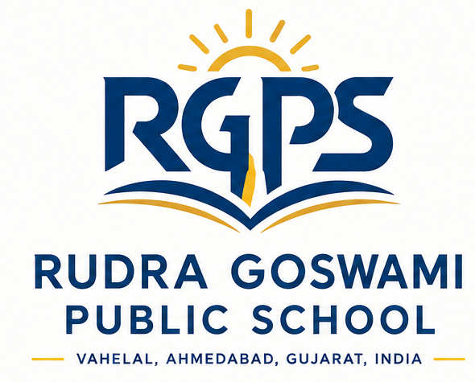

Access
We support accessible education for children in rural communities.
Rudra Goswami Public School is a school in Vahelal, Ahmedabad, with a focus on rural education and accessible learning.


RGPS serves learners from Nursery to Standard 10 under the GSEB board framework. The school’s educational mission is rooted in supporting rural education and making quality education accessible to students.
Additional funding is provided to support school operations. This commitment reflects the importance of sustaining educational opportunities for students and their community.
Our approach starts with a simple belief: where a child grows up should not define the learning opportunities available to them.
We support accessible education for children in rural communities.
We value learning that supports knowledge, curiosity and growth.
We believe every student deserves the chance to build a brighter future.

RGPS offers an academic journey from Nursery through Standard 10, affiliated with GSEB. The school’s mission connects classroom education with the wider goal of rural educational development.
Explore academics ↗